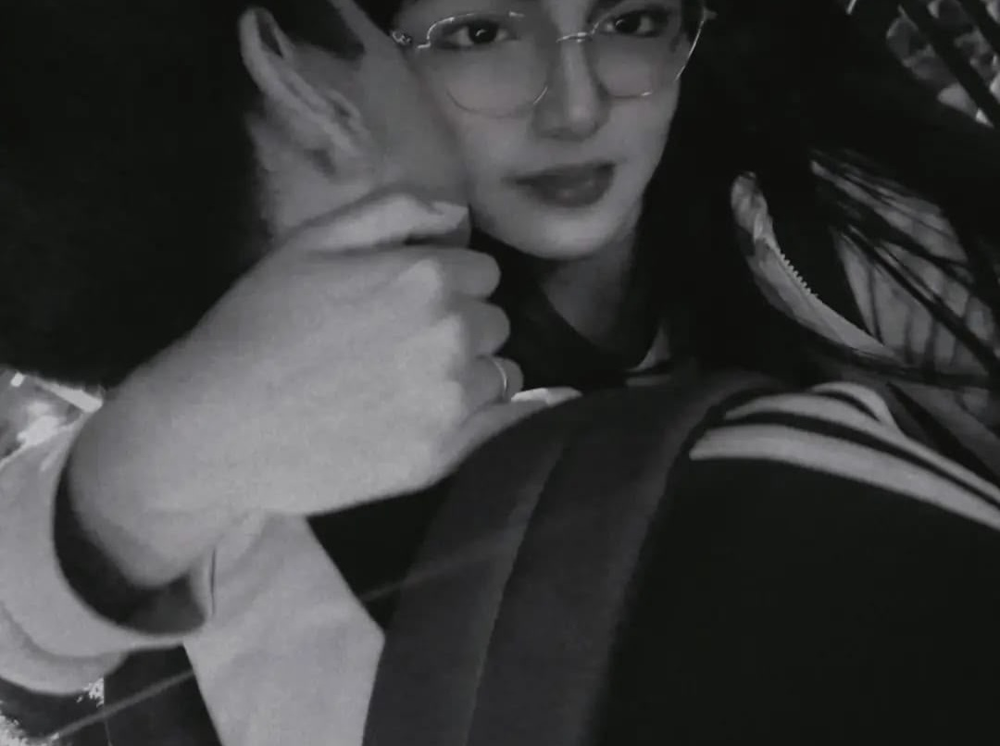
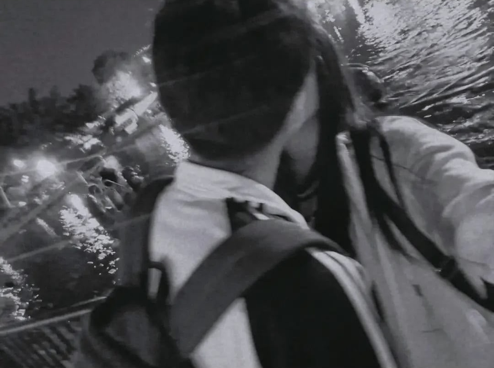
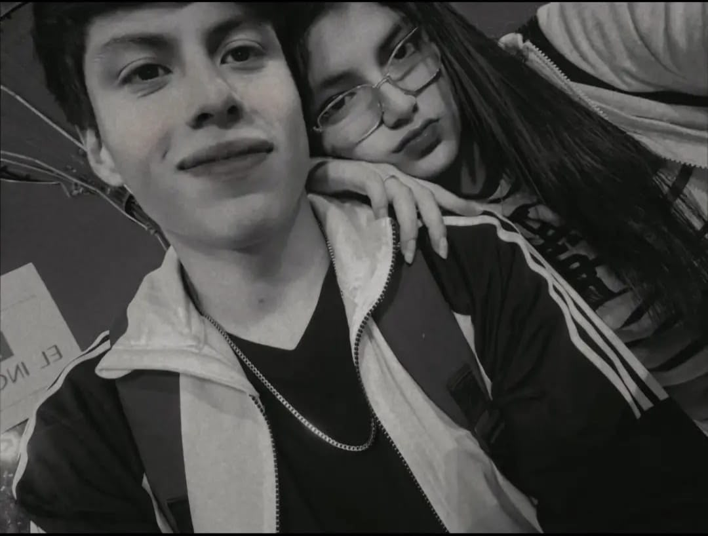

20 de noviembre de 2025
El día en que comenzó oficialmente esta aventura juntos, con un peluche y una cartita declarandome a ti.
Hay fechas que se convierten en recuerdos para siempre. Esta página es para celebrar la nuestra, y todo lo bonito que hemos construido juntos.
Un año puede parecer poco tiempo, pero alcanza para llenar el corazón de momentos inolvidables.
Desde que llegaste a mi vida, hemos ido creando una historia que es solamente nuestra. De ser simplemente una compañera de salon a convertirte en el amor de mi vida. Entre conversaciones, sonrisas, aventuras y pequeños momentos, este año se convirtió en algo que siempre voy a guardar con cariño.
Gracias por cada instante, por tu compañía y por formar parte de mis días. No se trata de que todo sea perfecto, sino de seguir compartiendo, aprendiendo y creando recuerdos juntos.
Estos son algunos de nuestros momentos favoritos.



Puedes personalizar estos momentos con fechas y experiencias que tengan significado para ambos.
El día en que comenzó oficialmente esta aventura juntos, con un peluche y una cartita declarandome a ti.
Las primeras salidas, conversaciones y momentos que nos fueron acercando.
Un montón de experiencias sean malas y buenas pero que hicieron que este año fuera único.
Nuestro primer aniversario. Un año de historia y muchos recuerdos por crear hasta ser viejitos.
Nuestra historia sigue sumando momentos.
Hay cosas que merecen decirse con calma y desde el corazón.
Para Ana, con mucho cariño.
Gracias por llegar hasta aquí. Hay algo que quiero que recuerdes siempre.